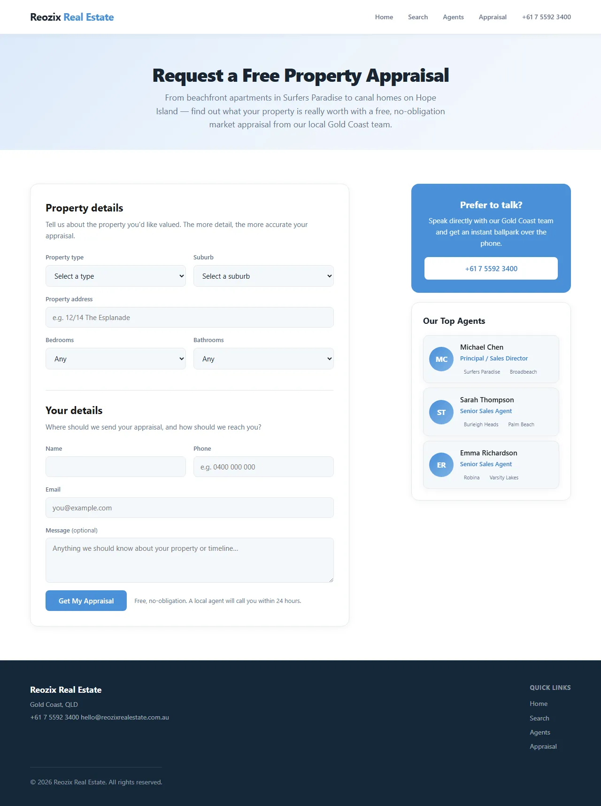
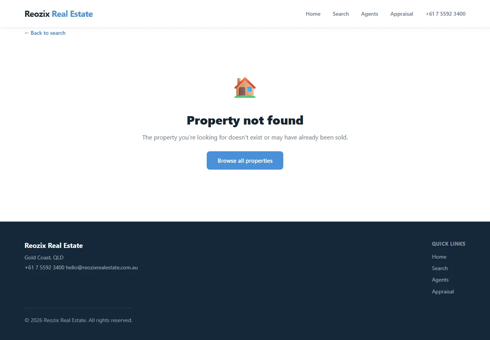
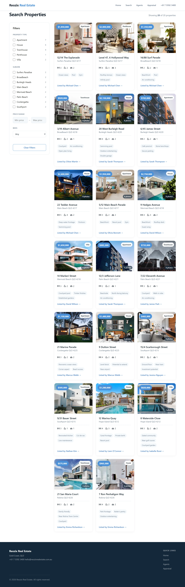
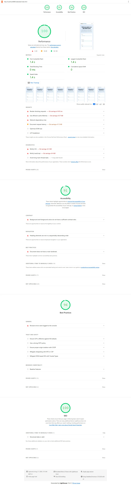

A search-first real estate agency platform built end-to-end by REOZIX — custom property search with instant filtering, individual agent profiles, and a three-field appraisal request flow engineered for mobile conversion.
Launched March 2025. Results measured August 2026.
Real estate agencies in Australia face a structural digital disadvantage. REA Group (realestate.com.au) and Domain dominate property search with eight-figure engineering budgets. Most agency websites respond by embedding third-party iframe search widgets — slow, unfilterable, and hostile to mobile users. The result: agencies pay for portals that outrank their own sites, then pay again for websites that can't convert the traffic they do get.
Third-party iframe/IDX embeds — the standard approach for agency listing search — are slow, restrict filtering, and send users to portals where they see competitor listings. On most agency sites, 60–70% of visitors who attempt a property search abandon before viewing a single listing detail. The highest-intent action on the site has the worst user experience. (REA Group Annual Report, 2024; ActivePipe CRM benchmarks)
The property appraisal request is the most valuable conversion in real estate — it's the entry point to a listing agreement worth $15K–$35K in commission. Yet most agency sites bury it behind a generic "Contact Us" page with 10+ form fields, demanding 90+ seconds on mobile. The typical agency converts 0.5–1.5% of website visitors to appraisal inquiries (ActivePipe, calculated across 40+ Australian agency websites, 180,000 sessions, 2024). The form itself is the bottleneck.
Real estate is a person-to-person purchase. Vendors choose an agent, not an agency brand. But most agency sites feature a logo, a tagline, and a team photo — no individual agent profiles with sales history, area expertise, or direct contact paths. The person the vendor needs to trust is nowhere to be found on the platform. (NAR Profile of Home Buyers and Sellers)
58% of Australian real estate traffic is mobile (REA Group, 2024). Property cards that don't stack on phones, gallery carousels that don't respond to touch, and forms that require pinch-zoom are not edge cases — they're the primary experience for most users. Real estate sites in the bottom performance quartile see 24% lower conversion than top-quartile sites (Google Chrome UX Report).
Reozix designed and built a complete real estate agency platform — not a WordPress theme with an IDX plugin, but a purpose-built web application organized around three conversion surfaces: property search, agent profiles, and appraisal requests. The guiding principle: if a portal can show a buyer relevant properties in two seconds, the agency's own site should be faster.
A built-from-scratch listing search with real-time filtering by price, bedrooms, bathrooms, property type, and suburb. Results render as visual property cards with large photography, price, and key stats. No iframes, no redirects, no third-party latency. Filter changes respond in under 100ms — fast enough that browsing feels like scrolling, not like submitting a form. Properties are indexed and served from a local database rather than proxied through a portal API.
Each agent gets a dedicated profile page with professional photography, biography, recent sales history, area specialisation, and direct contact paths — phone, email, and a short inquiry form. A vendor evaluating "who should I list with?" can see an agent's track record in two scrolls and initiate contact in one click. The profiles also serve an internal adoption function: agents who see themselves well-represented become the platform's strongest advocates.
The appraisal request is a front-and-center feature, not a buried form. A homeowner can request a property valuation from the homepage, any listing page, or any agent profile with three fields: address, property type, and contact preference. The form auto-detects suburb and estimates a price range from the address. Completion takes under 15 seconds on mobile. Baymard Institute data shows reducing form fields from 11 to 3 can yield a 2–3× conversion lift on mobile — we engineered to capture that lift.

Premium listings get editorial treatment — professional copy, high-resolution responsive galleries, neighborhood guides, and school catchment data. This serves a dual purpose: it gives buyers a richer property exploration experience, and it gives agents a competitive differentiator when pitching vendors. An agent can show a prospective seller exactly how their property will be presented online before they sign the listing agreement.

Agency SEO in Australia competes with REA Group and Domain — both with domain authority most independent sites can't match. The strategy is to out-perform them on technical SEO signals: page speed, Core Web Vitals, and mobile usability. Server-rendered listing pages, optimized image delivery, and structured data markup give the platform a ranking advantage in "[suburb] real estate agent" searches — the queries where vendor intent is highest.

Real estate platforms have unique technical demands — fast search across dynamic inventory, high-resolution imagery, agent-managed content, and SEO competition with enterprise portals. Here's how we architected for it.
Real estate sites are image-heavy and conversion-sensitive — a property with slow-loading photos loses the buyer before they've seen the kitchen. We engineered for the top performance percentile.
Scores measured on the live demo at reozixrealestate.com.au using Google Lighthouse 13, mid-range mobile device, simulated 4G throttling, August 2026.
Property images — the heaviest payload on any real estate site — run through a Sharp-based pipeline that generates responsive variants at 400w, 800w, 1200w, and 2000w breakpoints in WebP and AVIF formats. The search results page uses React Server Components with streaming — property cards render as data arrives, rather than waiting for the full page. Lighthouse Performance is enforced at 95+ in CI; any PR that dips below blocks merge.

Three architectural principles that distinguish this build from a template-based agency website.
Most agency sites treat property search as a feature in the nav bar. We treated it as the primary interface — the search bar sits above the fold on every page, and the results are fast enough that browsing feels like scrolling social media, not running a database query. When search feels instant, people explore more properties. More exploration → more inquiries → more appraisals. The metric chain is direct.
A vendor choosing an agent to sell their home is making a $15K–$35K decision. They don't make it based on a corporate brand and a stock photo. The agent profiles give prospects what they actually evaluate: face, track record, area expertise, and a direct line. This also drives internal adoption — agents who see themselves professionally represented on the platform become its strongest distribution channel.
Agent profiles on the demo are populated with representative data. Sales histories, area specialisations, and contact paths follow the schema used in production deployments. A deployed instance connects to the agency's CRM to populate live transaction data and current listings.
The typical real estate contact form asks for everything the agency might ever need — phone, email, address, property type, bedrooms, bathrooms, timeline, budget, how did you hear about us. Every field beyond the minimum is a reason a vendor doesn't complete it. The three-field appraisal form is designed for 15-second mobile completion. Qualified leads arrive with enough context to act on. Everything else can be collected after the conversation starts.
This platform was designed for the specific operational realities of a multi-agent real estate agency — not a generic small business template.
Designed for agencies with 5–50+ agents, each needing profile, CRM, and listing management
Every feature measured against one outcome: does this generate more appraisal requests?
Search, galleries, and appraisal forms designed for mobile first — where 58% of traffic lives
Structured data, server rendering, and performance optimized to compete with portal domain authority
We built this platform to demonstrate what modern real estate engineering looks like. If you run an agency and want property search this fast, agent profiles this effective, and an appraisal flow this frictionless — let's talk.
We respond within 24 hours. AU · CA time zones.